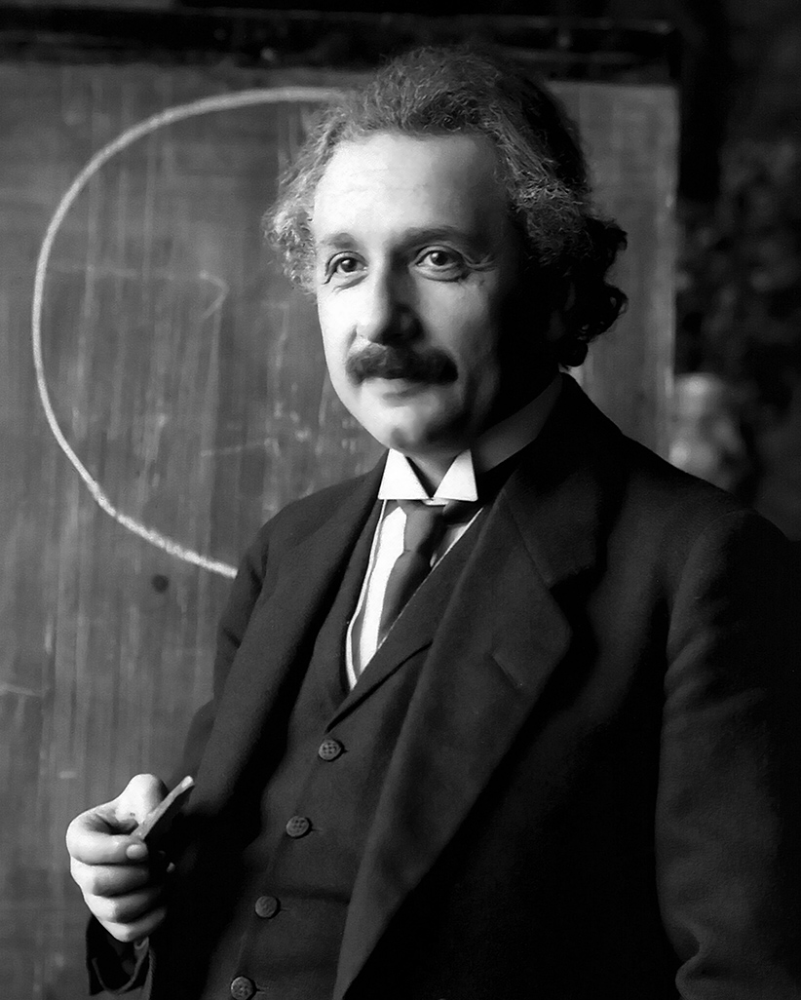

Reflection: Imagination sparks discovery by allowing us to explore ideas beyond the reach of formal knowledge. Einstein believed that intuition and creativity often precede equations, and that imagining possibilities—like riding alongside a beam of light—can lead to revolutionary insights.
